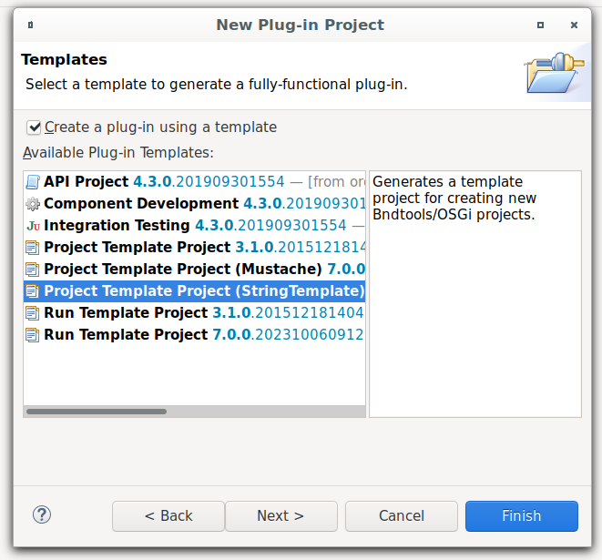
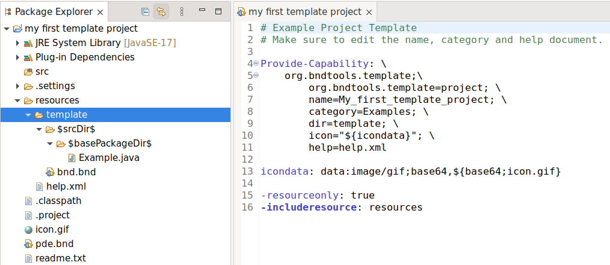
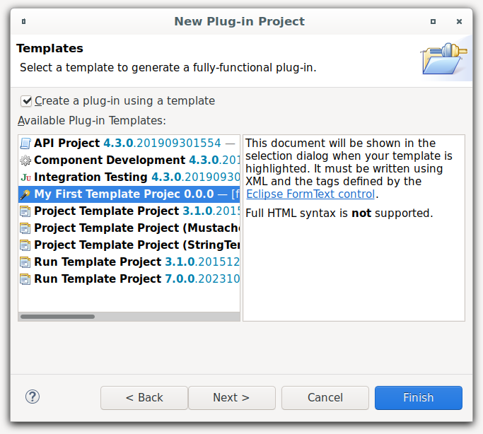
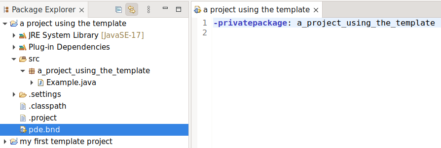
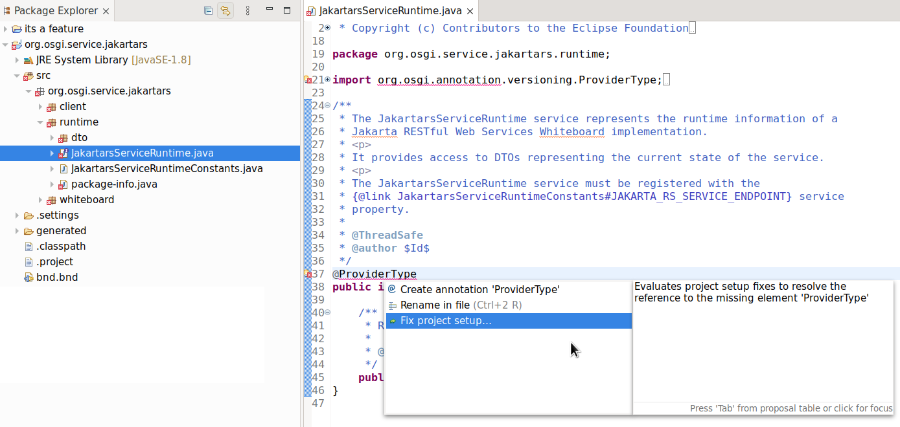
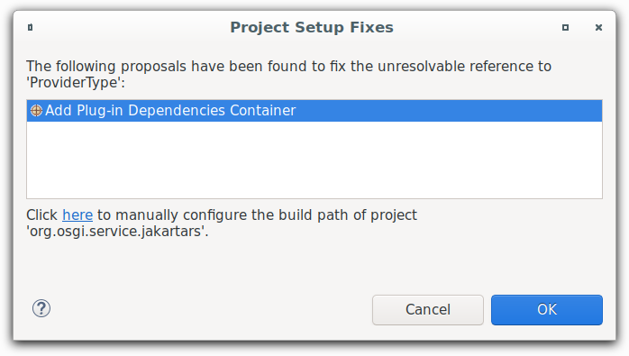
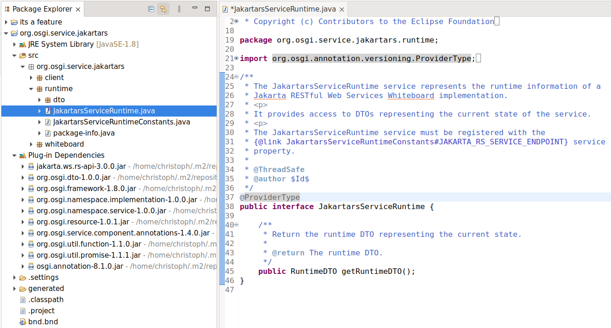

Dialogs, Wizards and Views |
|
| Support for bnd Project Templates |
In the 4.28 release there was support added for Automatic Manifest Generation, this is now enhanced to support bnd project templates, so you can easily create own templates or create new projects with existing ones.  This will now create a new template project that can be used to create new projects:  When you now create another project you can select your created template project   |
General |
|
| Declarative Services Annotations 1.4 Support |
The PDE Declarative Services Annotations support now allows generation of DS 1.4, for some highlight take a look here: OSGi R7 Highlights: Declarative Services |
| Classpath Fix for bnd Projects |
Assume you have imported a project that previously required bndtools to work and want to perform some small changes, at the moment you need to install another tooling, configure it and hope it does not interfere with your existing Eclipse install. Now the following is possible, you just go to the compile problem and choose "Fix Project Setup..."  Then you are presented with adding a Plugin-Dependencies Container  Apply that fix and you will get the bnd defined dependencies resolved  |